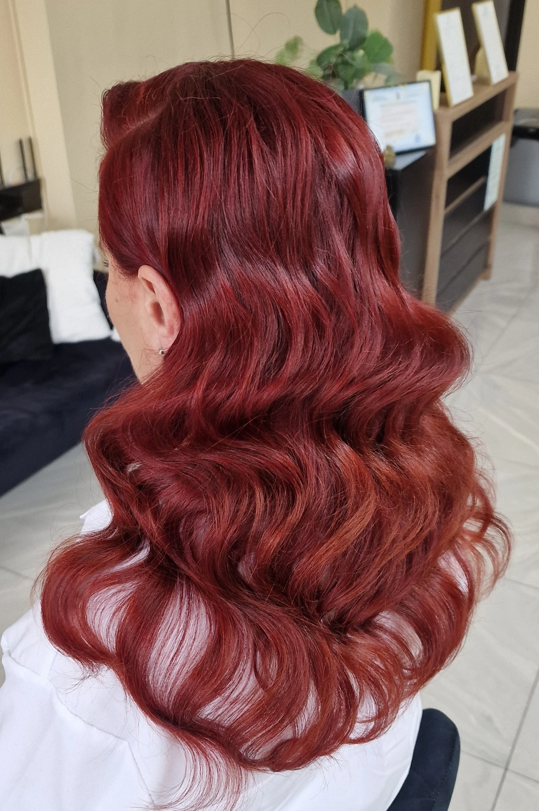
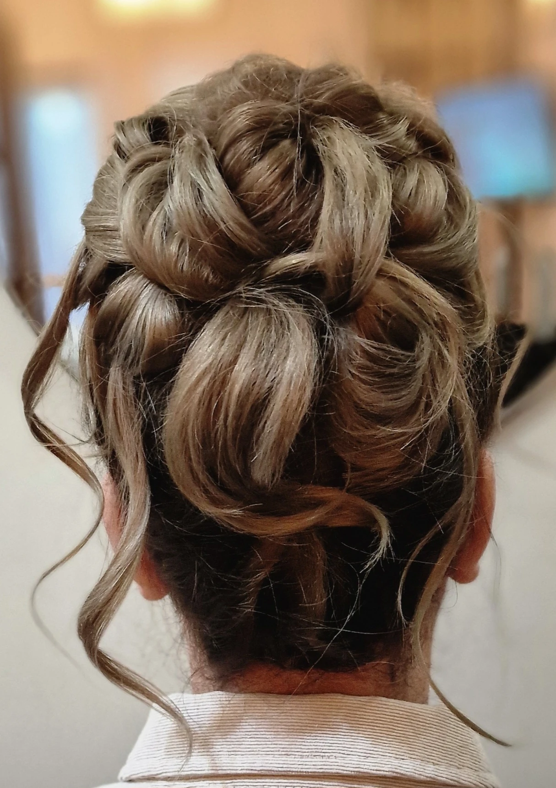
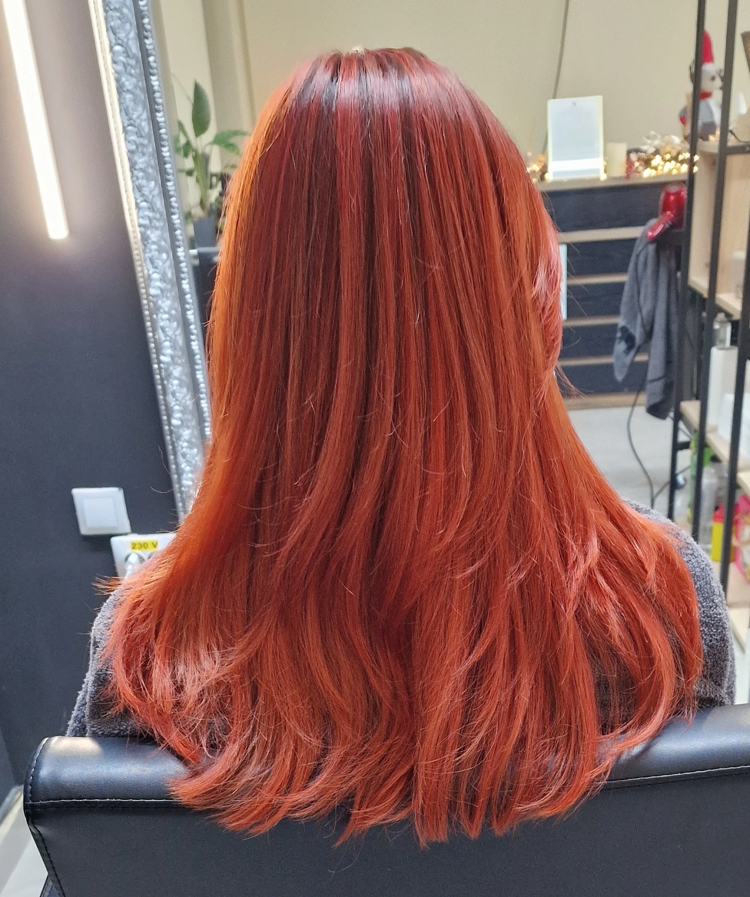
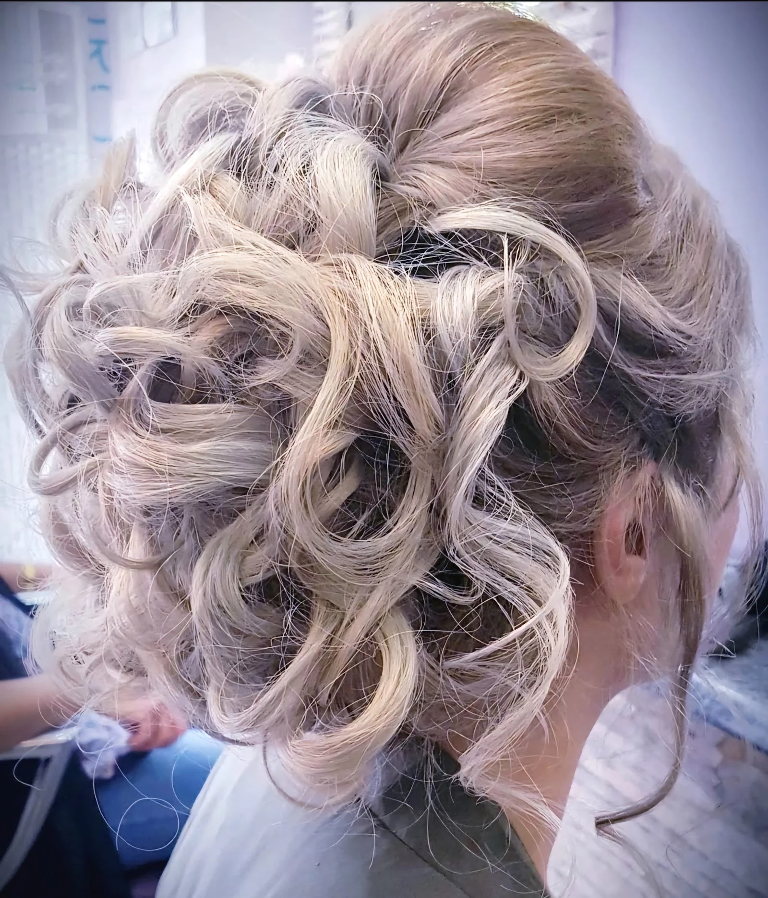
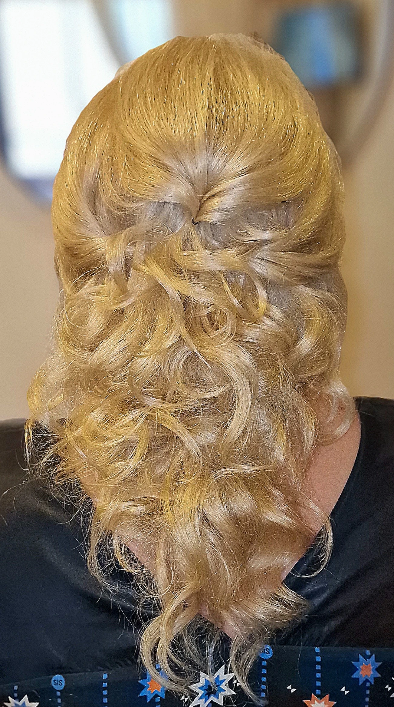
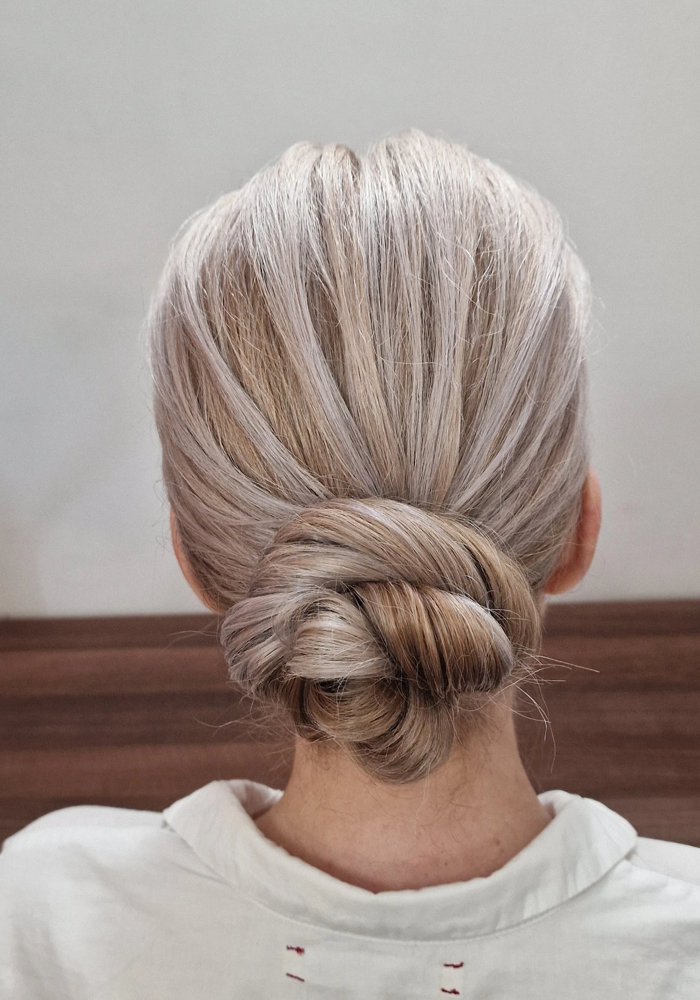
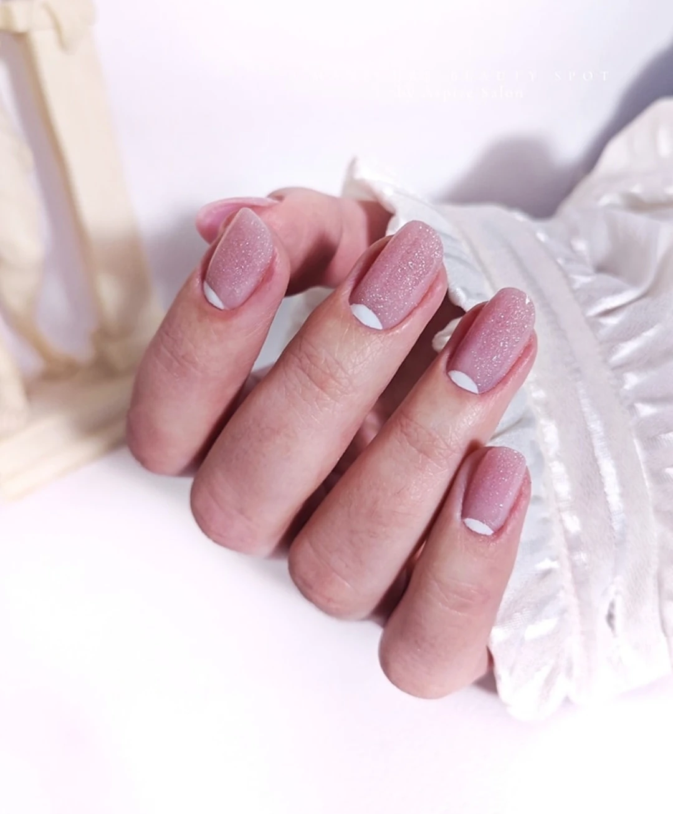
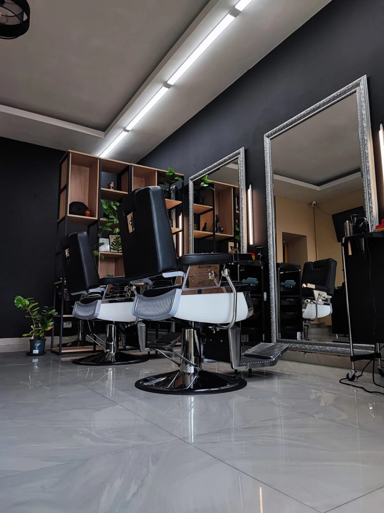

{{Salon de înfrumusețare · Strada Păcurari 12, Iași|Beauty salon · Strada Păcurari 12, Iași|Salão de beleza · Strada Păcurari 12, Iași}}
ASPIRE{{coafuri, culoare și unghii, în fața oglinzii.|updos, colour and nails, in front of the mirror.|penteados, cor e unhas, em frente ao espelho.}}
{{Bucle prinse în coc, roșu care curge în valuri, unghii nude cu sclipici. Te așezi, se aprind luminile, iar în oglindă vezi rezultatul.|Curls pinned into an updo, red falling in waves, nude nails with a little sparkle. You sit down, the lights come on, and the result is in the mirror.|Caracóis presos num apanhado, ruivo a cair em ondas, unhas nude com brilho. Senta-se, as luzes acendem-se, e o resultado está no espelho.}}
5,0
{{pe Google|on Google|no Google}}

{{Din salon|From the salon|Do salão}}
{{Văzute din spate, cum le vede oglinda a doua.|Seen from behind, the way the hand mirror shows them.|Vistos de trás, como os mostra o segundo espelho.}}







{{Salonul|The salon|O salão}}
{{Rame argintii, tuburi de lumină, gresie lucioasă.|Silver frames, light tubes, glossy tiles.|Molduras prateadas, tubos de luz, chão brilhante.}}
{{Așa arată salonul de pe Păcurari 12: perete gri închis, oglinzi mari cu rame argintii lucrate, scaune negre și rafturi de lemn cu plante.|That’s the salon at Păcurari 12: a dark grey wall, big mirrors in ornate silver frames, black chairs and wooden shelves with plants.|É assim o salão da Păcurari 12: parede cinzento-escura, espelhos grandes com molduras prateadas trabalhadas, cadeiras pretas e prateleiras de madeira com plantas.}}
- {{Coafuri de ocazie: cocuri, bucle, semiprinse|Occasion styles: updos, curls, half-up|Penteados de festa: apanhados, caracóis, meio-apanhados}}
- {{Culoare, inclusiv nuanțe de roșu și aramiu|Colour, including reds and coppers|Coloração, incluindo ruivos e acobreados}}
- {{Manichiură|Manicure|Manicure}}
{{lista completă și prețuri: de confirmat|full list and prices: to be confirmed|lista completa e preços: a confirmar}}
{{Programare|Booking|Marcação}}
{{Alege serviciul. Oglinda îți arată ce am făcut deja.|Pick a service. The mirror shows what we’ve already done.|Escolha o serviço. O espelho mostra o que já fizemos.}}
{{Unde suntem|Where we are|Onde estamos}}
{{Strada Păcurari 12, Iași.|Strada Păcurari 12, Iași.|Strada Păcurari 12, Iași.}}
- {{Adresa|Address|Morada}}Strada Păcurari 12, 700511 Iași
- {{Telefon|Phone|Telefone}}0765 406 510
- {{Program|Hours|Horário}}{{Luni: de la 12:00 · Duminică: închis|Monday: from 12:00 · Sunday: closed|Segunda: a partir das 12:00 · Domingo: fechado}}
{{restul programului: de confirmat|other hours: to be confirmed|restante horário: a confirmar}} - Google★ 5,0
- Onlinestailer.ro
{{Sună|Call|Ligar}} {{Deschide în Google Maps|Open in Google Maps|Abrir no Google Maps}}